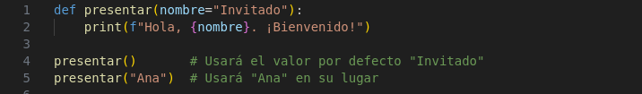

Las funciones en Python son bloques de código reutilizables que permiten estructurar un programa en partes más pequeñas y organizadas, facilitando la lectura, mantenimiento y depuración del código. Las funciones se utilizan para realizar tareas específicas, y pueden ser invocadas múltiples veces con diferentes entradas sin tener que reescribir el código. En Python, las funciones se definen utilizando la palabra clave def, seguidas de un nombre y paréntesis que pueden contener parámetros.
Estructura de un Programa Informático y Python
Funciones
1. Definición y Uso de Funciones
Una función se define con la palabra clave def, seguida de un nombre representativo y paréntesis que pueden contener parámetros opcionales. Después de los dos puntos, el bloque de código que pertenece a la función debe estar indentado. Las funciones son invocadas por su nombre y pueden ser llamadas tantas veces como sea necesario, lo que permite evitar la repetición del mismo código.
En este caso, la función saludar() se define sin parámetros y, cuando es llamada, imprime un mensaje. No es necesario que la función reciba ningún valor, y su ejecución se limita a la acción de imprimir el mensaje.
2. Parámetros y Argumentos
Las funciones pueden aceptar valores de entrada denominados parámetros. Estos valores permiten que la función trabaje con información externa a su cuerpo y realice operaciones basadas en esos valores. Los parámetros se definen dentro de los paréntesis de la función, y cuando la función es llamada, los argumentos se pasan en la llamada, reemplazando los parámetros definidos.
En este caso, el parámetro nombre se utiliza dentro de la función para personalizar el mensaje. Al llamar a la función saludar("Carlos"), el argumento "Carlos" reemplaza al parámetro nombre y se utiliza en el mensaje.
Parámetros con Valores por Defecto
Es posible definir parámetros con valores por defecto, lo que permite que una función pueda ser llamada sin necesidad de pasar un argumento, utilizando el valor predeterminado. Esto puede ser útil cuando ciertos parámetros son opcionales.

En este ejemplo, la función presentar tiene un parámetro nombre con un valor por defecto "Invitado". Si no se pasa un argumento, la función utiliza este valor predeterminado. Si se pasa un argumento, como "Ana", se utiliza ese valor.
3. Retorno de Valores
Las funciones en Python pueden devolver valores utilizando la palabra clave return. Esto permite que la función realice una tarea y devuelva el resultado para que se pueda utilizar en otras partes del programa. El valor retornado puede ser un número, una cadena de texto, una lista o incluso una tupla, dependiendo de las necesidades del programa.
En este caso, la función sumar() toma dos parámetros a y b, y devuelve la suma de ambos. El valor retornado se almacena en la variable resultado y luego se imprime.
4. Funciones con Múltiples Retornos
En Python, una función puede devolver múltiples valores. Estos valores se agrupan en una tupla, que es un tipo de datos inmutable. Esto permite que la función devuelva varios resultados a la vez, los cuales pueden ser capturados en variables separadas.
En este ejemplo, la función operaciones() realiza dos operaciones (suma y resta) y devuelve ambos resultados. Cuando se llama a la función, los valores devueltos se desempaquetan automáticamente en las variables suma y resta.
5. Funciones Lambda
Las funciones lambda son funciones pequeñas y de una sola línea que se definen sin necesidad de usar def. Se utilizan comúnmente cuando se necesita una función simple de manera temporal. Las funciones lambda son útiles cuando no se quiere definir una función completa, pero se necesita una función breve para pasar como argumento a otra función, como en el caso de map(), filter(), o sorted().

En este caso, se define una función lambda que toma dos parámetros, x y y, y devuelve su producto. Esta función es compacta y se puede usar directamente sin necesidad de asignarle un nombre explícito, lo que hace que sea útil para operaciones rápidas y sencillas.
6. Ámbito de Variables: Local y Global
En Python, las variables pueden tener dos tipos de ámbito: local y global. Las variables locales son aquellas que se definen dentro de una función, y solo pueden ser utilizadas dentro de ella. Las variables globales son definidas fuera de cualquier función y pueden ser utilizadas por cualquier función dentro del mismo programa.
En este caso, la variable x definida dentro de la función ejemplo() es local, y su valor solo es accesible dentro de esa función. La variable x fuera de la función es global, y su valor es accesible desde cualquier parte del programa. Como resultado, se imprime 5 dentro de la función y 10 fuera de ella.
7. Recursividad en Funciones
La recursividad es un concepto en programación en el que una función se llama a sí misma para resolver problemas que pueden descomponerse en subproblemas más pequeños y similares. Un ejemplo clásico de una función recursiva es el cálculo del factorial de un número, donde la función se llama a sí misma hasta llegar a un caso base.
En este caso, la función factorial() se llama a sí misma con un valor decreciente de n hasta llegar al caso base, n == 0, en cuyo caso devuelve 1. Luego, las llamadas recursivas se resuelven de manera acumulativa hasta que se obtiene el valor final de 5! = 120.
Obra publicada con Licencia Creative Commons Reconocimiento Compartir igual 4.0